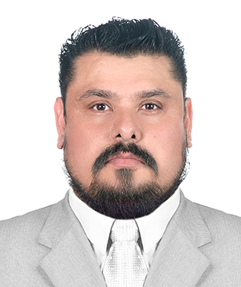

Dr. · Electronics Engineering
Everardo Inzunza-González
Full Professor and Researcher (Titular C), full-time, tenured
Faculty of Engineering, Architecture and Design (FIAD), Universidad Autónoma de Baja California (UABC)
Ensenada, Baja California, Mexico
Professor and researcher in electronics engineering, working on deep learning for medical images and biomedical signals, chaos-based cryptography and embedded systems.
Academic profile
Everardo Inzunza-González is a full-time Professor and Researcher (Titular C) at the Faculty of Engineering, Architecture and Design of the Universidad Autónoma de Baja California (UABC) in Ensenada, Mexico, where he has worked since February 2000. He received his B.Sc. in Electronics Engineering from the Instituto Tecnológico de Culiacán, his M.Sc. in Electronics and Telecommunications from CICESE, and his Ph.D. in Electrical Sciences from UABC in 2013, with honorable mention. His recent work applies machine learning and deep learning to medical images and to biomedical signals such as EEG, ECG and heart sounds. He also keeps a line of research on chaos-based cryptography implemented on embedded systems, FPGAs and edge devices. He is a Level 2 member of Mexico's National System of Researchers (SNII, 2025–2029), has held the PRODEP Desirable Profile recognition since 2004, and leads the consolidated research group UABC-CA-238. He is part of the core faculty of the Master's and Doctoral Program in Science and Engineering (MyDCI) and has served as guest editor of special issues in MDPI and Elsevier journals.
- 42 peer-reviewed journal articles
- 1 edited book (CRC Press)
- 5 book chapters (Springer, CRC Press)
- 2 patents granted (IMPI, Mexico)
- 6 software copyright registrations
- 33 theses supervised or co-supervised
Counts from the publication record. Chapters include those published with a DOI by Springer and CRC Press; chapters in UABC edited volumes and outreach articles are listed separately in the full CV.
Research areas
Deep learning for medical imaging
Brain tumor and glioma classification in MRI with CNNs and Vision Transformers; plantar footprint classification.
Biomedical signal processing and machine learning
EEG for attention, motor imagery and mindfulness studies; heart sound denoising; deep vein thrombosis diagnosis.
Chaos-based cryptography and secure communications
Image and ECG encryption with chaotic maps, implemented on microcontrollers, FPGAs and multiprocessor embedded systems.
Embedded systems and edge AI
TinyML for gas sensing, underwater vision on ROVs, fish counting and grapevine disease detection on edge devices.
Robotics, path planning and logistics
Path planning for mobile robots and drones; last-mile logistics.
Instrumentation and RF
RF power amplifier linearization, de-embedding and microwave measurement calibration.
Recent journal articles
- C. Hurtado-Sánchez, R. Rosales-Cisneros, J. R. Cárdenas-Valdez, A. Calvillo-Téllez, and E. Inzunza-González, “Adaptive Assistive Technologies for Learning Mexican Sign Language: Design of a Mobile Application with Computer Vision and Personalized Educational Interaction,” Future Internet, vol. 18, no. 1, Art. no. 61, 2026, doi: 10.3390/fi18010061.
- E. Inzunza-Gonzalez and F. Stasolla, “Artificial Intelligence and Deep Learning in Medical and Assistive Technologies: Advances, Challenges, and Future Directions,” Technologies, vol. 14, no. 8, Art. no. 475, 2026, doi: 10.3390/technologies14080475.
- M. A. Gómez-Guzmán, J. J. Esqueda-Elizondo, L. Jiménez-Beristain, G. M. Galindo-Aldana, O. A. Aguirre-Castro, E. R. Ramos-Acosta, C. Torres-Gonzalez, E. E. García-Guerrero, and E. Inzunza-Gonzalez, “Enhancing Glioma Classification in Magnetic Resonance Imaging Using Vision Transformers and Convolutional Neural Networks,” Electronics, vol. 15, no. 2, Art. no. 434, 2026, doi: 10.3390/electronics15020434.
- C. González-Rodríguez, E. García-Canseco, M. A. Alonso-Arévalo, E. Inzunza-Gonzalez, and E. E. García-Guerrero, “Enhancing heart sound signal denoising: unveiling the impact of time-frequency transformation in U-Net performance,” Signal, Image and Video Processing, vol. 20, no. 7, Art. no. 399, 2026, doi: 10.1007/s11760-026-05421-3.
- A. Navarro-Rodríguez, O. A. Castro-Artola, B. Rösler, E. E. García-Guerrero, O. A. Aguirre-Castro, J. Galarza-Falfan, and E. Inzunza-Gonzalez, “Real-time seismic signal classification using deep vision architectures for earthquake early warning systems,” Earth Science Informatics, vol. 19, no. 4, Art. no. 44, 2026, doi: 10.1007/s12145-026-02099-6.
- C. Lazcano-García, K. G. García-Resendiz, J. Carrillo-Tripp, E. Inzunza-Gonzalez, E. E. García-Guerrero, D. Cervantes-Vasquez, J. Galarza-Falfan, C. A. Lopez-Mercado, and O. A. Aguirre-Castro, “Deep Learning-Based System for Early Symptoms Recognition of Grapevine Red Blotch and Leafroll Diseases and Its Implementation on Edge Computing Devices,” AgriEngineering, vol. 7, no. 3, Art. no. 63, 2025, doi: 10.3390/agriengineering7030063.
Contact
Faculty of Engineering, Architecture and Design (FIAD), Universidad Autónoma de Baja California (UABC), Ensenada, Baja California, Mexico.
Institutional email: einzunza@uabc.edu.mx